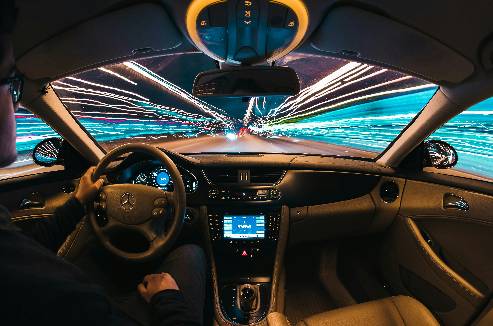

Role and Scope
I built this project to practice designing a larger Java application with real operational workflows and structured data management.
Project Case Study
A driving school management system built to organize students, vehicles, and daily operations in one practical application.

I built this project to practice designing a larger Java application with real operational workflows and structured data management.
The main challenge was organizing multiple record types (students, vehicles, and daily operations) without making the interface difficult to navigate.
Java, database design, object-oriented programming, and management-system workflows.